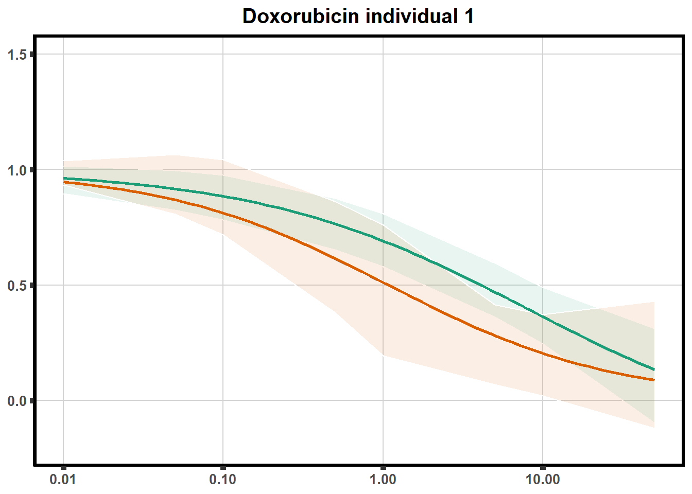
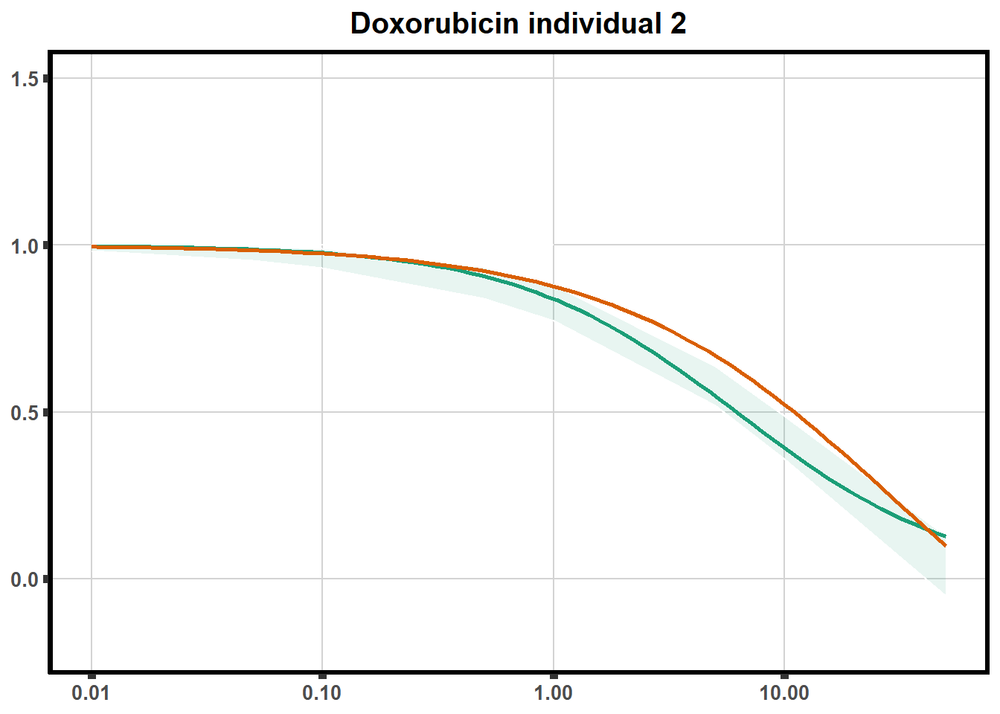
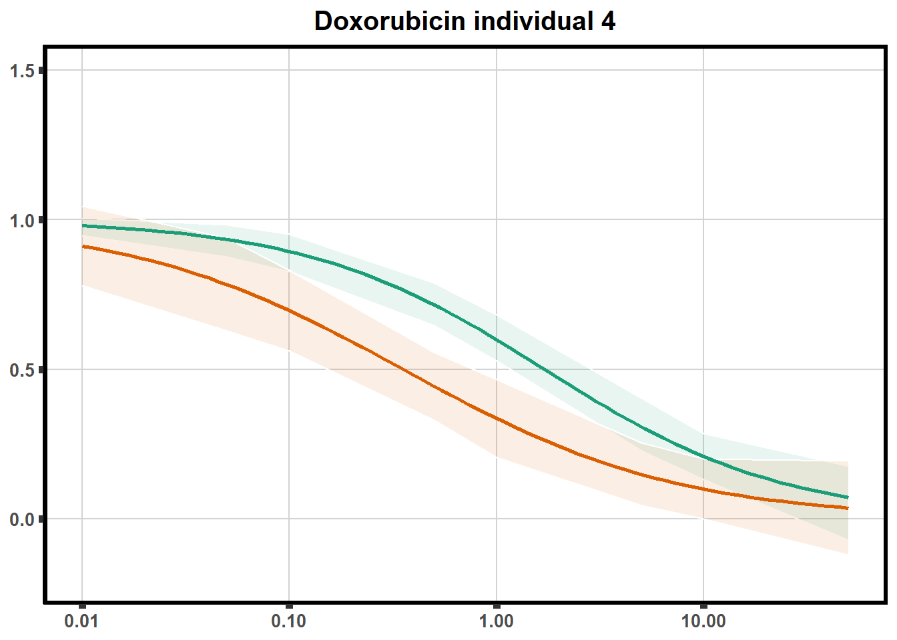
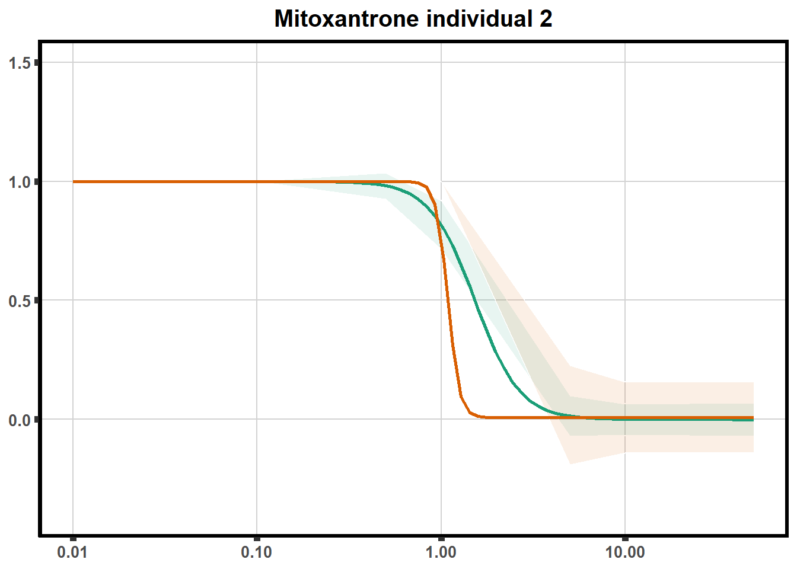
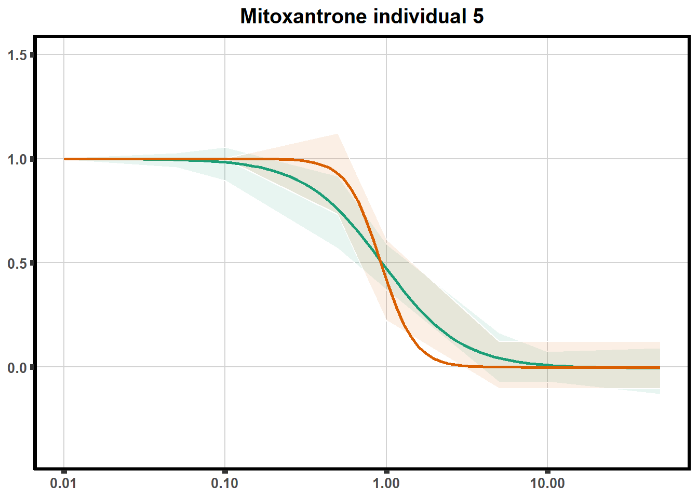
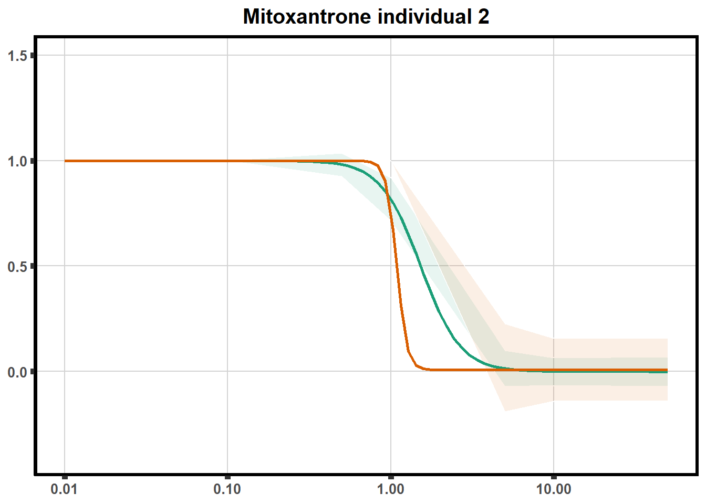
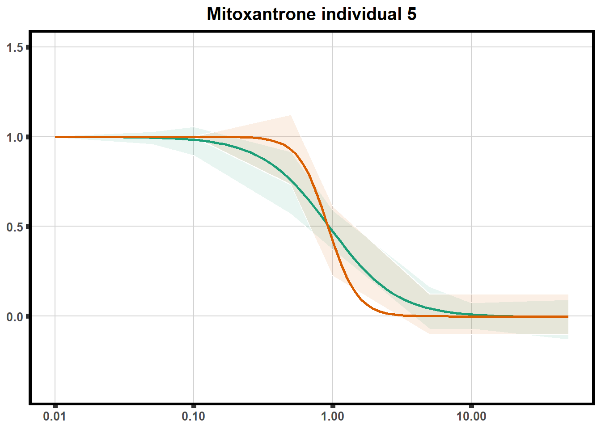

Renee_DRC_Code
ERM
2023-07-19
Last updated: 2023-07-19
Checks: 7 0
Knit directory: Cardiotoxicity/
This reproducible R Markdown analysis was created with workflowr (version 1.7.0). The Checks tab describes the reproducibility checks that were applied when the results were created. The Past versions tab lists the development history.
Great! Since the R Markdown file has been committed to the Git repository, you know the exact version of the code that produced these results.
Great job! The global environment was empty. Objects defined in the global environment can affect the analysis in your R Markdown file in unknown ways. For reproduciblity it’s best to always run the code in an empty environment.
The command set.seed(20230109) was run prior to running
the code in the R Markdown file. Setting a seed ensures that any results
that rely on randomness, e.g. subsampling or permutations, are
reproducible.
Great job! Recording the operating system, R version, and package versions is critical for reproducibility.
Nice! There were no cached chunks for this analysis, so you can be confident that you successfully produced the results during this run.
Great job! Using relative paths to the files within your workflowr project makes it easier to run your code on other machines.
Great! You are using Git for version control. Tracking code development and connecting the code version to the results is critical for reproducibility.
The results in this page were generated with repository version b3abdbf. See the Past versions tab to see a history of the changes made to the R Markdown and HTML files.
Note that you need to be careful to ensure that all relevant files for
the analysis have been committed to Git prior to generating the results
(you can use wflow_publish or
wflow_git_commit). workflowr only checks the R Markdown
file, but you know if there are other scripts or data files that it
depends on. Below is the status of the Git repository when the results
were generated:
Ignored files:
Ignored: .RData
Ignored: .Rhistory
Ignored: .Rproj.user/
Ignored: analysis/figure/
Ignored: data/41588_2018_171_MOESM3_ESMeQTL_ST2_for paper.csv
Ignored: data/Arr_GWAS.txt
Ignored: data/Arr_geneset.RDS
Ignored: data/BC_cell_lines.csv
Ignored: data/CADGWASgene_table.csv
Ignored: data/CAD_geneset.RDS
Ignored: data/CALIMA_Data/
Ignored: data/Clamp_Summary.csv
Ignored: data/Cormotif_24_k1-5_raw.RDS
Ignored: data/DAgostres24.RDS
Ignored: data/DAtable1.csv
Ignored: data/DDEMresp_list.csv
Ignored: data/DDE_reQTL.txt
Ignored: data/DDEresp_list.csv
Ignored: data/DEG-GO/
Ignored: data/DEG_cormotif.RDS
Ignored: data/DF_Plate_Peak.csv
Ignored: data/DRC48hoursdata.csv
Ignored: data/Da24counts.txt
Ignored: data/Dx24counts.txt
Ignored: data/Dx_reQTL_specific.txt
Ignored: data/Ep24counts.txt
Ignored: data/GOIsig.csv
Ignored: data/GOplots.R
Ignored: data/GTEX_setsimple.csv
Ignored: data/GTEX_sig24.RDS
Ignored: data/GTEx_gene_list.csv
Ignored: data/HFGWASgene_table.csv
Ignored: data/HF_geneset.RDS
Ignored: data/Heart_Left_Ventricle.v8.egenes.txt
Ignored: data/Heatmap_mat.RDS
Ignored: data/Heatmap_sig.RDS
Ignored: data/Hf_GWAS.txt
Ignored: data/K_cluster
Ignored: data/K_cluster_kisthree.csv
Ignored: data/K_cluster_kistwo.csv
Ignored: data/LD50_05via.csv
Ignored: data/LDH48hoursdata.csv
Ignored: data/Mt24counts.txt
Ignored: data/NoRespDEG_final.csv
Ignored: data/RINsamplelist.txt
Ignored: data/Seonane2019supp1.txt
Ignored: data/TMMnormed_x.RDS
Ignored: data/TOP2Bi-24hoursGO_analysis.csv
Ignored: data/TR24counts.txt
Ignored: data/Top2biresp_cluster24h.csv
Ignored: data/Viabilitylistfull.csv
Ignored: data/allexpressedgenes.txt
Ignored: data/allgenes.txt
Ignored: data/allmatrix.RDS
Ignored: data/allmymatrix.RDS
Ignored: data/annotation_data_frame.RDS
Ignored: data/averageviabilitytable.RDS
Ignored: data/avgLD50.RDS
Ignored: data/avg_LD50.RDS
Ignored: data/backGL.txt
Ignored: data/calcium_data.RDS
Ignored: data/clamp_summary.RDS
Ignored: data/cormotif_3hk1-8.RDS
Ignored: data/cormotif_initalK5.RDS
Ignored: data/cormotif_initialK5.RDS
Ignored: data/cormotif_initialall.RDS
Ignored: data/counts24hours.RDS
Ignored: data/cpmcount.RDS
Ignored: data/cpmnorm_counts.csv
Ignored: data/crispr_genes.csv
Ignored: data/ctnnt_results.txt
Ignored: data/cvd_GWAS.txt
Ignored: data/dat_cpm.RDS
Ignored: data/data_outline.txt
Ignored: data/drug_noveh1.csv
Ignored: data/efit2.RDS
Ignored: data/efit2_final.RDS
Ignored: data/efit2results.RDS
Ignored: data/ensembl_backup.RDS
Ignored: data/ensgtotal.txt
Ignored: data/filcpm_counts.RDS
Ignored: data/filenameonly.txt
Ignored: data/filtered_cpm_counts.csv
Ignored: data/filtered_raw_counts.csv
Ignored: data/filtermatrix_x.RDS
Ignored: data/folder_05top/
Ignored: data/geneDoxonlyQTL.csv
Ignored: data/gene_corr_df.RDS
Ignored: data/gene_corr_frame.RDS
Ignored: data/gene_prob_tran3h.RDS
Ignored: data/gene_probabilityk5.RDS
Ignored: data/gostresTop2bi_ER.RDS
Ignored: data/gostresTop2bi_LR
Ignored: data/gostresTop2bi_LR.RDS
Ignored: data/gostresTop2bi_TI.RDS
Ignored: data/gostrescoNR
Ignored: data/gtex/
Ignored: data/heartgenes.csv
Ignored: data/hsa_kegg_anno.RDS
Ignored: data/individualDRCfile.RDS
Ignored: data/individual_DRC48.RDS
Ignored: data/individual_LDH48.RDS
Ignored: data/indv_noveh1.csv
Ignored: data/kegglistDEG.RDS
Ignored: data/kegglistDEG24.RDS
Ignored: data/kegglistDEG3.RDS
Ignored: data/knowfig4.csv
Ignored: data/knowfig5.csv
Ignored: data/label_list.RDS
Ignored: data/ld50_table.csv
Ignored: data/mean_vardrug1.csv
Ignored: data/mean_varframe.csv
Ignored: data/mymatrix.RDS
Ignored: data/new_ld50avg.RDS
Ignored: data/nonresponse_cluster24h.csv
Ignored: data/norm_LDH.csv
Ignored: data/norm_counts.csv
Ignored: data/old_sets/
Ignored: data/plan2plot.png
Ignored: data/raw_counts.csv
Ignored: data/response_cluster24h.csv
Ignored: data/sigVDA24.txt
Ignored: data/sigVDA3.txt
Ignored: data/sigVDX24.txt
Ignored: data/sigVDX3.txt
Ignored: data/sigVEP24.txt
Ignored: data/sigVEP3.txt
Ignored: data/sigVMT24.txt
Ignored: data/sigVMT3.txt
Ignored: data/sigVTR24.txt
Ignored: data/sigVTR3.txt
Ignored: data/siglist.RDS
Ignored: data/siglist_final.RDS
Ignored: data/siglist_old.RDS
Ignored: data/slope_table.csv
Ignored: data/supp_normLDH48.RDS
Ignored: data/supp_pca_all_anno.RDS
Ignored: data/table3a.omar
Ignored: data/testlist.txt
Ignored: data/toplistall.RDS
Ignored: data/trtonly_24h_genes.RDS
Ignored: data/trtonly_3h_genes.RDS
Ignored: data/tvl24hour.txt
Ignored: data/tvl24hourw.txt
Ignored: data/venn_code.R
Ignored: data/viability.RDS
Untracked files:
Untracked: .RDataTmp
Untracked: .RDataTmp1
Untracked: .RDataTmp2
Untracked: Doxorubicin_vehicle_3_24.csv
Untracked: Doxtoplist.csv
Untracked: GWAS_list_of_interest.xlsx
Untracked: KEGGpathwaylist.R
Untracked: OmicNavigator_learn.R
Untracked: SigDoxtoplist.csv
Untracked: analysis/DRC_analysist.Rmd
Untracked: analysis/ciFIT.R
Untracked: analysis/enricher.Rmd
Untracked: analysis/export_to_excel.R
Untracked: analysis/untitled1.R
Untracked: code/DRC_plotfigure1.png
Untracked: code/constantcode.R
Untracked: code/cpm_boxplot.R
Untracked: code/extracting_ggplot_data.R
Untracked: code/fig1plot.png
Untracked: code/figurelegeddrc.png
Untracked: code/movingfilesto_ppl.R
Untracked: code/pearson_extract_func.R
Untracked: code/pearson_tox_extract.R
Untracked: code/plot1C.fun.R
Untracked: code/spearman_extract_func.R
Untracked: code/venndiagramcolor_control.R
Untracked: cormotif_probability_genelist.csv
Untracked: individual-legenddark2.png
Untracked: installed_old.rda
Untracked: motif_ER.txt
Untracked: motif_LR.txt
Untracked: motif_NR.txt
Untracked: motif_TI.txt
Untracked: output/DNRvenn.RDS
Untracked: output/DOXvenn.RDS
Untracked: output/EPIvenn.RDS
Untracked: output/Figures/
Untracked: output/MTXvenn.RDS
Untracked: output/Volcanoplot_10
Untracked: output/Volcanoplot_10.RDS
Untracked: output/allfinal_sup10.RDS
Untracked: output/gene_corr_fig9.RDS
Untracked: output/legend_b.RDS
Untracked: output/motif_ERrep.RDS
Untracked: output/motif_LRrep.RDS
Untracked: output/motif_NRrep.RDS
Untracked: output/motif_TI_rep.RDS
Untracked: output/output-old/
Untracked: output/supplementary_motif_list_GO.RDS
Untracked: output/toptablebydrug.RDS
Untracked: output/x_counts.RDS
Untracked: reneebasecode.R
Unstaged changes:
Modified: analysis/DEG-GO_analysis.Rmd
Modified: analysis/Figure2.Rmd
Modified: analysis/Figure5.Rmd
Modified: analysis/Figure9.Rmd
Modified: analysis/Knowles2019.Rmd
Modified: analysis/Supplementary_figures.Rmd
Modified: analysis/other_analysis.Rmd
Modified: analysis/run_all_analysis.Rmd
Modified: output/DNRmeSNPs.RDS
Modified: output/DNRreQTLs.RDS
Modified: output/DOXmeSNPs.RDS
Modified: output/DOXreQTLs.RDS
Modified: output/EPImeSNPs.RDS
Modified: output/EPIreQTLs.RDS
Modified: output/GOI_genelist.txt
Modified: output/MTXmeSNPs.RDS
Modified: output/MTXreQTLs.RDS
Modified: output/TNNI_LDH_RNAnormlist.txt
Modified: output/daplot.RDS
Modified: output/dxplot.RDS
Modified: output/epplot.RDS
Modified: output/mtplot.RDS
Modified: output/plan2plot.png
Modified: output/toplistall.csv
Modified: output/trplot.RDS
Modified: output/veplot.RDS
Note that any generated files, e.g. HTML, png, CSS, etc., are not included in this status report because it is ok for generated content to have uncommitted changes.
These are the previous versions of the repository in which changes were
made to the R Markdown (analysis/DRC_analysis.Rmd) and HTML
(docs/DRC_analysis.html) files. If you’ve configured a
remote Git repository (see ?wflow_git_remote), click on the
hyperlinks in the table below to view the files as they were in that
past version.
| File | Version | Author | Date | Message |
|---|---|---|---|---|
| Rmd | b3abdbf | reneeisnowhere | 2023-07-19 | added ld50 calc of averaged viability |
| Rmd | 7755b30 | reneeisnowhere | 2023-07-19 | added ld50 calc of averaged viability |
| Rmd | f88c9e4 | reneeisnowhere | 2023-07-18 | adding in ld50 for average |
| Rmd | 130918a | reneeisnowhere | 2023-07-14 | rearrage and update codes |
| html | 4be89c7 | reneeisnowhere | 2023-07-03 | Build site. |
| Rmd | e3409d1 | reneeisnowhere | 2023-07-03 | axis change on LD50 corr |
| html | 9a6ec64 | reneeisnowhere | 2023-07-03 | Build site. |
| Rmd | 0f1c868 | reneeisnowhere | 2023-07-03 | updated ld50 correlation, adde the plots |
| html | 6cc56e3 | reneeisnowhere | 2023-06-30 | Build site. |
| Rmd | c3fd0fe | reneeisnowhere | 2023-06-30 | adding in LD50 comparisons |
| Rmd | f4bd5e1 | reneeisnowhere | 2023-06-27 | checking code changes overtime |
| Rmd | c1d667f | reneeisnowhere | 2023-06-23 | updating the codes at Friday start. |
| Rmd | 1e75bd0 | reneeisnowhere | 2023-06-19 | update ld50 and slope plot |
| html | 4643600 | reneeisnowhere | 2023-06-16 | Build site. |
| Rmd | 3d4ca64 | reneeisnowhere | 2023-06-16 | updates on Friday |
| html | 8b862b3 | reneeisnowhere | 2023-06-13 | Build site. |
| Rmd | 5ede159 | reneeisnowhere | 2023-06-13 | finalized plots and curves for slope and LD50 and index updata |
| html | 03078f0 | reneeisnowhere | 2023-06-06 | Build site. |
| Rmd | 850d883 | reneeisnowhere | 2023-06-06 | adding slope with t-test |
| Rmd | 293585d | reneeisnowhere | 2023-06-06 | updated to slope code |
| Rmd | e0e109c | reneeisnowhere | 2023-05-30 | adding slope plot, working on individual plots |
| Rmd | 25d32da | reneeisnowhere | 2023-05-26 | Adding 3 hour and chisq test to populations |
| Rmd | 8d87a52 | reneeisnowhere | 2023-05-17 | end of day |
| html | a0ffcd6 | reneeisnowhere | 2023-04-20 | Build site. |
| Rmd | 64f64df | reneeisnowhere | 2023-04-20 | ld50 DRC image added |
| html | f4ba3a7 | reneeisnowhere | 2023-04-20 | Build site. |
| Rmd | 33ec579 | reneeisnowhere | 2023-04-20 | ld50 DRC image added |
| html | 2cd8dbe | reneeisnowhere | 2023-04-20 | Build site. |
| Rmd | 79c0445 | reneeisnowhere | 2023-04-20 | adding DRC analysis to github |
| html | 3ff1a00 | reneeisnowhere | 2023-04-20 | Build site. |
| Rmd | 7c0c02a | reneeisnowhere | 2023-04-20 | adding DRC analysis to github |
| html | bea5c80 | reneeisnowhere | 2023-04-20 | Build site. |
| Rmd | 2faf972 | reneeisnowhere | 2023-04-20 | adding DRC analysis to github |
| Rmd | 6d925a2 | reneeisnowhere | 2023-04-16 | updating cormotif with updated RNAseq counts |
| Rmd | 575fd81 | reneeisnowhere | 2023-04-11 | updating cormotif |
| Rmd | 4e52216 | reneeisnowhere | 2023-03-31 | End of week updates |
| Rmd | 3a26d52 | reneeisnowhere | 2023-03-22 | Wed poster analysis changes |
| Rmd | 945460e | reneeisnowhere | 2023-03-19 | Updating go plot with reorder |
| Rmd | 69b5d53 | reneeisnowhere | 2023-03-17 | updated DRC 6 plot with color for indivd |
| Rmd | 11a2ab4 | reneeisnowhere | 2023-03-03 | updates |
| Rmd | 49191f8 | reneeisnowhere | 2023-03-03 | more tracking and updates |
| Rmd | 90a0227 | reneeisnowhere | 2023-02-27 | monday2-27 |
| Rmd | accc241 | reneeisnowhere | 2023-02-10 | updates for the week |
| Rmd | 1fc5c19 | reneeisnowhere | 2023-02-09 | Git update |
| Rmd | 8c41736 | reneeisnowhere | 2023-02-07 | update with corrMotif |
This is my Dose Response Curve Code and data with summaries.
I hope to explain what and how I did things for future analysis, so that
the code and data are reproducible. All data was created by treating
cardiomyocytes at ~day 26 of diff with 0.01-50 \(\mu\)M concentrations of the drugs:
Daunorubicin (DNR) Doxorubicin (DOX) Epirubicin (EPI) Mitoxantrone (MTX)
Trastuzumab (TRZ) [ note: TRZ could only be used at concentrations of 10
\(\mu\)M and lower] Vehicle (VEH)
VEH is effectively the same media, however water is added in volumes equivalent to the volume used to dilute the drugs in a 10 mM stock concentration. This is why it has values at different concentrations and why I analyze the data this way.
Cell viability was assessed using Presto Blue reagent according to
manufacturer’s protocols.
90 uL of Galactose media + 10 uL of Presto Blue reagent were added to
each well of the 96 well DRC plate for one hour. The cell media was then
extracted to a black, clear bottom plate and wrapped in foil and stored
at 4 degrees overnight (to allow bubbles to go away). A plate reader was
used to measure florescence and the RFLU values were exported to an
excel file.
Analysis was done as follows:
The background wells were averaged and the average value was subtracted from every well on the plate. Because the wells on the plate were randomized, matching the treatment with the wells is critical and was done inefficiently in an excel file for each experiment.
Percent Viability was calculated by averaging the RFLU from the vehicle at each concentration, and dividing each drug’s RFLU at that concentration by the Vehicle control average RFLU to give a ratio. All values less than 0 were turned into zero in the excel document, and a final compilation for each differentiation and dose curve treatment was stored in an document called DRC_compilation.xlsx. ( note: I spelled incorrectly in my computer)
For calculation to control for plate to plate variance, the “Empty_Blank” well RFLU2 values from each plate within an experiment were averaged.
eg:plate 1= empty average RFLU2 = 29000,
plate 2 empty average RFLU2 =31000 normalized ratio plate 1/plate 2 or 29000/31000 =0.9355
this normalization ratio then was divided into every RFLU2 value on plate 1. Plate 2 would be divided by 1 to keep the formulas consistent (31000/31000 or plate2/plate2) to create a column that contained the adjusted RFLU2 values, called “adj”
Calculations then proceed as described originally. The first viability value is called “Percent”. The adjusted value for intra-plate differences is called “Padj” although this use was deprecated.
Part 2 of the analysis of data begins by entering data from the excel compilation to R. The data is stored as an excel file, which was then stored as an .RDS object for analysis retrieval.
Step 1 in R is loading the libraries needed for analysis:
library(car)
library(tidyverse)
library(tinytex)
library(BiocGenerics)
library(data.table)
library(drc)
library(Hmisc)
library(cowplot)
library(grid)
library(ggsignif)
library(RColorBrewer)
library(broom)Step 2 is importing the data from the DRC_compilation.xlsx file. The data was imported and then stored as a data table in R.
Step 3:
The files have a list of similar names:
‘Drug’ which is the short name of drug used
‘Conc’ which is the concentration of drug added (in microMolar);
‘Sname’ the abbreviated name of Drug and Conc;
‘Well’ letter with two number format ‘Row’ # 1-8 for A-G ‘Column’ numbers 1-12;
‘Plate’ will vary between one and three;
‘RFLU’ the RFLU from the 0 hour reading with background subtracted (not all experiments have them);
‘RFLU2’ the RFLU from the 48 hour reading with background subtracted.
I streamlined the data into more simple formats:
Individual 1 is cell line 75-1 (D04_75_1,D05_75_1 )
Individual 2 is cell line 87-1 (D04_87_1, D05_87_1)
Individual 3 is cell line 77-1 (D02_77_1, D03_77_1)
Individual 4 is 79-1 (D04_79_1, D05_79_1)
Individual 5 is 78-1 (D01_78_1, D03_78_1)
Individual 6 is 71-1 (D02_71_1, DJAG_71_1)
- As of 6-2-22 I am implementing a new naming for R handles:
ind1a, ind1b etc, to make sure I process out the “empty_blanks”
- As of 6-2-22 I am implementing a new naming for R handles:
I am also converting Conc column to numeric
Step 4: File cleanup first subsets each file imported by taking out the ‘Empty’ samples in the Drug column and then renaming the file to individual names and DRC a and b
I then convert the concentrations to numeric and select the 5 columns
that I really need for analysis, followed by dropping any wells that
were NA in the Percent column.
The next part of the code makes analysis files and groups and things for
the iterations.
Adata-frame called individuals is complied from each of the dataframes wrangled above and will be the “final” R object stored in the project folder.
Loading the data into R
Once they are all in a data frame, a few thing need to be defined for other function like ggplot.
Viability
### to extract parameters for mapping
drug_pal_fact <- c("#8B006D","#DF707E","#F1B72B", "#3386DD","#707031","#41B333")
full_list <- read.csv("data/DRC48hoursdata.csv", row.names = 1)
averageFL <- full_list %>%
na.omit()%>%
mutate(sDrug=Drug) %>%
mutate(sDrug=case_match(Drug,"Daun"~"DNR",
"Doxo"~"DOX",
"Epi"~"EPI",
"Mito"~"MTX",
"Tras"~"TRZ",
"Veh"~ "VEH", .default= Drug)) %>%
group_by(SampleID, sDrug,Conc) %>%
mutate(sDrug=factor(sDrug, levels = c('DOX','EPI','DNR','MTX','TRZ','VEH'))) %>%
dplyr::summarize(Mean = mean(Percent))
# saveRDS(averageFL,"data/averageviabilitytable.RDS")
averageFL %>%
ungroup() %>%
mutate(indv=substr(SampleID,4,4)) %>%
mutate(indv=factor(indv, levels= c('1','2','3','4','5','6'))) %>%
filter(Conc <5) %>%
mutate(Conc= factor(as.numeric(Conc))) %>%
group_by(indv,sDrug,Conc) %>%
dplyr::summarize(Viability=mean(Mean)) %>%
ungroup() %>%
ggplot(., aes(x=sDrug, y= Viability*100 )) +
geom_boxplot(position="dodge", outlier.colour = "transparent",
aes(fill=sDrug))+
geom_point(aes(color=indv))+
guides(alpha = "none")+
ylim(0,150.5)+
scale_color_brewer(palette = "Dark2",
guide="legend",
name ="Individual",
labels(c(1,2,3,4,5,6)))+
scale_fill_manual(values=drug_pal_fact, name ="Treatment")+
theme_classic() +
# geom_hline(yintercept = 1,lty = 4)+
ylab("Viability") +
facet_wrap(~Conc)+
ggtitle("Viablity across concentrations at 48 hours")+
theme(axis.title=element_text(size=10),
axis.ticks=element_line(size =2),
axis.text=element_text(size=9, face = "bold"),
panel.grid.major = element_line(colour = 'darkgrey'),
panel.border=element_rect(fill = NA, size = 2),
plot.title = element_text(hjust = 0.5, size =15, face = "bold"))
averageFL %>%
ungroup() %>%
mutate(indv=substr(SampleID,4,4)) %>%
mutate(indv=factor(as.numeric(indv))) %>%
filter(Conc<5) %>%
group_by(indv,sDrug,Conc) %>%
dplyr::summarize(Viability=mean(Mean)) %>% ungroup() %>%
ggplot(., aes(x=as.factor(Conc), y= Viability*100 )) +
geom_boxplot(position="dodge",outlier.colour="transparent", aes(fill=sDrug))+
geom_point(aes(color=indv))+
guides(alpha = "none")+
ylim(0,150.5)+
scale_color_brewer(palette = "Dark2",guide="legend",
name = "Individual",labels(c(1,2,3,4,5,6)))+
scale_fill_manual(values=drug_pal_fact, name = "Treatment")+
theme_classic() +
xlab(expression(paste("Concentration [", mu, "M]")))+
ylab("Viability") +
facet_wrap(~sDrug)+
ggtitle("Viablity across drugs at 48 hours")+
theme(axis.title=element_text(size=10),
axis.ticks=element_line(size =2),
axis.text=element_text(size=9, face = "bold"),
panel.grid.major = element_line(colour = 'darkgrey'),
panel.border=element_rect(fill = NA, size = 2),
plot.title = element_text(hjust = 0.5, size =15, face = "bold"))
The above codes can be altered to include ALL concentrations.
Ploting the DRC
ggplot(DA,
aes(x=Conc, y= Viability, color =indv,alpha =0.4)) +
guides(color="none", alpha = "none")+ #guides turned off for group plotting
stat_smooth(method = "drm", ## This code calls DRM inside ggplot2
method.args = list(fct = L.4(c(NA,NA,1,NA))), se = FALSE)+ #note: fct means function, and L.4 stands for 4 parameter log-logistic curve I have set at 1 for upper-limit and left the rest 'free'
ylim(0,1.5)+ #setting the limits so everything with graph
scale_color_brewer(palette = "Dark2")+ #adding color of choice
scale_x_log10() + # Change the x-axis scale to log 10 scale
theme_classic() + # looks pretty
xlab(expression(paste("Concentration [", mu, "M]")))+
ylab("Percent viability/100") +
ggtitle("Daunorubicin")+
theme(plot.title = element_text(hjust = 0.5, size =15, face = "bold"),
axis.title=element_text(size=10),
axis.ticks=element_line(linewidth =2),
axis.text=element_text(size=10, face = "bold"),
panel.grid.major = element_line(colour = 'lightgrey'),
panel.border=element_rect(fill = NA, linewidth = 2),
plot.background = element_rect(fill = "white", colour = NA))The code above is used multiple times and stored into an R object, so I can later combine the group into one full plot. This keeps the graphs in the same proportion to each other. I do alter each individual graph to either add axis titles or remove repetition.


plot all together!


Now to extract all the data from drm.
LD50 and slope extract
daunls <- list() ###daunorubicin list
dnr_sl <- list() ##slope
doxols <- list() ### doxorubicin list
dox_sl <- list()
epils <- list() ###epirubicin list
epi_sl <- list()
mitols <- list() ###mitoxantrone list
mtx_sl <- list()
trasls <- list() ###trastuzmab list
trz_sl <- list()
vehls <- list() ###vehicle list
veh_sl <- list()
ID <- c("ind1a",
"ind1b",
"ind2a",
"ind2b",
"ind3a",
"ind3b",
"ind4a",
"ind4b",
"ind5a",
"ind5b",
"ind6a",
"ind6b")DRC replicates





 



LD50 correlation to heatmap
##ld50 condensed

Looking a LD50 by individual
Single heatmap (A)
 ##### plot B
##### plot B

LD50 by avg of viability:
Estimated effective doses
Estimate Std. Error
e:1:50 0.95084 0.57842
Estimated effective doses
Estimate Std. Error
e:1:50 1.83407 0.57203
Estimated effective doses
Estimate Std. Error
e:1:50 0.60552 0.13003
Estimated effective doses
Estimate Std. Error
e:1:50 0.469785 0.059054
Estimated effective doses
Estimate Std. Error
e:1:50 0.86278 0.45637
Estimated effective doses
Estimate Std. Error
e:1:50 1.13255 0.50949
R version 4.3.1 (2023-06-16 ucrt)
Platform: x86_64-w64-mingw32/x64 (64-bit)
Running under: Windows 10 x64 (build 19045)
Matrix products: default
locale:
[1] LC_COLLATE=English_United States.utf8
[2] LC_CTYPE=English_United States.utf8
[3] LC_MONETARY=English_United States.utf8
[4] LC_NUMERIC=C
[5] LC_TIME=English_United States.utf8
time zone: America/Chicago
tzcode source: internal
attached base packages:
[1] grid stats graphics grDevices utils datasets methods
[8] base
other attached packages:
[1] ComplexHeatmap_2.16.0 broom_1.0.5 RColorBrewer_1.1-3
[4] ggsignif_0.6.4 cowplot_1.1.1 Hmisc_5.1-0
[7] drc_3.0-1 MASS_7.3-60 data.table_1.14.8
[10] BiocGenerics_0.46.0 tinytex_0.45 lubridate_1.9.2
[13] forcats_1.0.0 stringr_1.5.0 dplyr_1.1.2
[16] purrr_1.0.1 readr_2.1.4 tidyr_1.3.0
[19] tibble_3.2.1 ggplot2_3.4.2 tidyverse_2.0.0
[22] car_3.1-2 carData_3.0-5 workflowr_1.7.0
loaded via a namespace (and not attached):
[1] gridExtra_2.3 sandwich_3.0-2 rlang_1.1.1
[4] magrittr_2.0.3 clue_0.3-64 GetoptLong_1.0.5
[7] git2r_0.32.0 multcomp_1.4-25 matrixStats_1.0.0
[10] compiler_4.3.1 getPass_0.2-2 mgcv_1.9-0
[13] png_0.1-8 callr_3.7.3 vctrs_0.6.3
[16] shape_1.4.6 crayon_1.5.2 pkgconfig_2.0.3
[19] fastmap_1.1.1 backports_1.4.1 labeling_0.4.2
[22] utf8_1.2.3 promises_1.2.0.1 rmarkdown_2.23
[25] tzdb_0.4.0 ps_1.7.5 xfun_0.39
[28] cachem_1.0.8 jsonlite_1.8.7 highr_0.10
[31] later_1.3.1 parallel_4.3.1 cluster_2.1.4
[34] R6_2.5.1 bslib_0.5.0 stringi_1.7.12
[37] rpart_4.1.19 jquerylib_0.1.4 Rcpp_1.0.11
[40] iterators_1.0.14 knitr_1.43 zoo_1.8-12
[43] base64enc_0.1-3 IRanges_2.34.1 httpuv_1.6.11
[46] Matrix_1.6-0 splines_4.3.1 nnet_7.3-19
[49] timechange_0.2.0 tidyselect_1.2.0 rstudioapi_0.15.0
[52] abind_1.4-5 yaml_2.3.7 doParallel_1.0.17
[55] codetools_0.2-19 processx_3.8.1 lattice_0.21-8
[58] withr_2.5.0 evaluate_0.21 foreign_0.8-84
[61] survival_3.5-5 circlize_0.4.15 pillar_1.9.0
[64] ggpubr_0.6.0 whisker_0.4.1 stats4_4.3.1
[67] checkmate_2.2.0 foreach_1.5.2 generics_0.1.3
[70] rprojroot_2.0.3 S4Vectors_0.38.1 hms_1.1.3
[73] munsell_0.5.0 scales_1.2.1 gtools_3.9.4
[76] glue_1.6.2 tools_4.3.1 fs_1.6.2
[79] mvtnorm_1.2-2 plotrix_3.8-2 colorspace_2.1-0
[82] nlme_3.1-162 htmlTable_2.4.1 Formula_1.2-5
[85] cli_3.6.1 fansi_1.0.4 gtable_0.3.3
[88] rstatix_0.7.2 sass_0.4.6 digest_0.6.33
[91] TH.data_1.1-2 rjson_0.2.21 htmlwidgets_1.6.2
[94] farver_2.1.1 htmltools_0.5.5 lifecycle_1.0.3
[97] httr_1.4.6 GlobalOptions_0.1.2